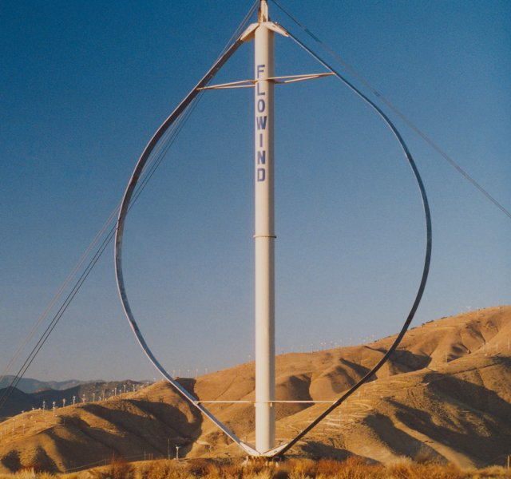
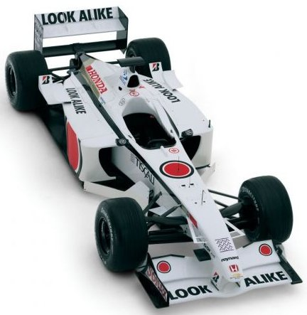
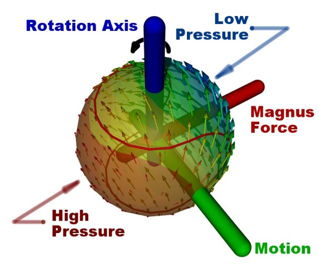
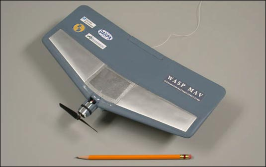

Turbulence to Skydiving: The 2007 Blog Review
2007 was quite a ride. Looking through my posts you'll find a veritable mystery tour from Turbulence to Skydiving Without a Parachute. Various themes emerged without warning - there was no master plan - I just went where the wind blew and the water ran.
Darrieus Vertical-Axis Wind TurbineImage courtesy of FloWind
Wind Turbines
My articles featuring wind turbines in all their shapes, sizes and configurations proved popular. The article Vertical-Axis Wind Turbines was especially popular and remains so even now.
Another favorite amongst our readers was the Flying Wind Turbines and Blog Action Day article, which described a high-flying, inflatable wind turbine. Of course wind turbines are not new, in fact they were a mainstay of energy production until the steam engine displaced them - find out more in Wind Energy: Back to the Future.
Not officially a wind turbine, but satisfying the same energy generation function using wind, was the novel Wind Belt: Wind Power Minus the Spin, which shows that there is always scope to innovate. In this case inspiration came from a musical string instrument.
Wind turbines and wind belts aren't the only environmentally friendly energy generation methods - read more about other alternatives in Energy from the Environment.
Submarines
The most popular article I penned came as a surprise; it was James Bond Submarines for Sale, which briefly described the C-Questers from Uboatworx. If the response to this article is anything to go by, there are a lot of people interested in buying submarines. Now, if you read this and decide to satisfy this demand, just remember Caedium when you select your Computer-Aided Engineering (CAE) analysis software.
Another interesting underwater craft I covered was the Talisman in Submersible Racecar, which was built by racecar manufacturer Lola.
Competition
Being an active road racer (runner), I'm fascinated by all forms of competition, so you've no doubt noticed a number of articles concerning engineering competitions. Not only does competition spur innovation, but, more importantly, it is fun. Just ask the students that competed in the first Formula Hybrid Competition or those that competed in the International Micro Air Vehicle Competition. Seems that students have all the fun, but fear not, there are other competitions, such as the Automotive X Prize, that are open to anyone with an idea.
2001 BAR Honda Formula 1 Car
Then there are whole industries based on yearly competitions, sometimes masquerading as sports, but really just engineers' playgrounds. Formula 1, and especially F1 aerodynamics, is one such playground that I covered in Formula 1 Aerodynamics.
The competitive spirit is also in evidence when it comes to breaking records such as the world water speed record or the time a paper airplane can stay aloft.
Aerodynamics
I've attempted to explain aerodynamics and how it relates to some common phenomenon such as why do golf balls have dimples and why do spinning balls curve.
Curve Ball
Multi-Element Airfoils, Secrets of Diffusers and Wing In Ground Effect also describe fundamental aerodynamic effects. My hope in describing these phenomena is that they become less of a mystery. Maybe some of you will use Computational Fluid Dynamics (CFD), such as our Caedium Panel Flow add-on, to investigate these and other aerodynamic effects for yourself.
All Things Micro
Another theme I'm interested in is small things - micro even. From MicroISV to Micro Air Vehicles to Microfluidics to Micro Wind Turbines to Personal Jetpacks to Personal Air Vehicles, I guess I like the idea of being able to do more with less - just like Caedium.
Wasp Micro Air Vehicle
Happy New Year
It was a pleasure talking to you here at the Symscape blog during 2007. Stay tuned for my weekly posts next year. No exit strategy - I'm in this for the long haul.
Feedback
Questions? Ideas? Problems?

Recent blog posts
- CFD Simulates Distant Past
- Background on the Caedium v6.0 Release
- Long-Necked Dinosaurs Succumb To CFD
- CFD Provides Insight Into Mystery Fossils
- Wind Turbine Design According to Insects
- Runners Discover Drafting
- Wind Tunnel and CFD Reveal Best Cycling Tuck
- Active Aerodynamics on the Lamborghini Huracán Performante
- Fluidic Logic
- Stonehenge Vortex Revealed as April Fools' Day Distortion Field
 Get our Blog feed
Get our Blog feed